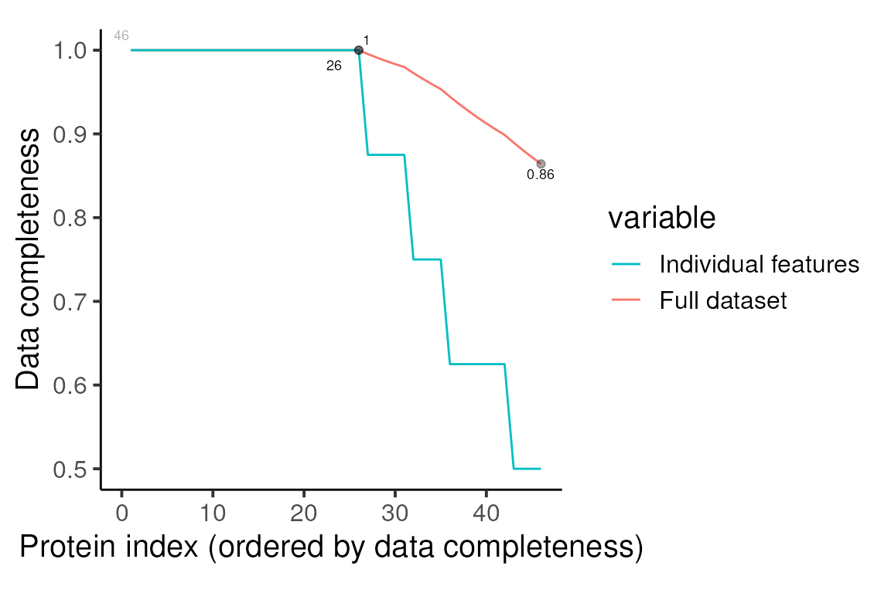
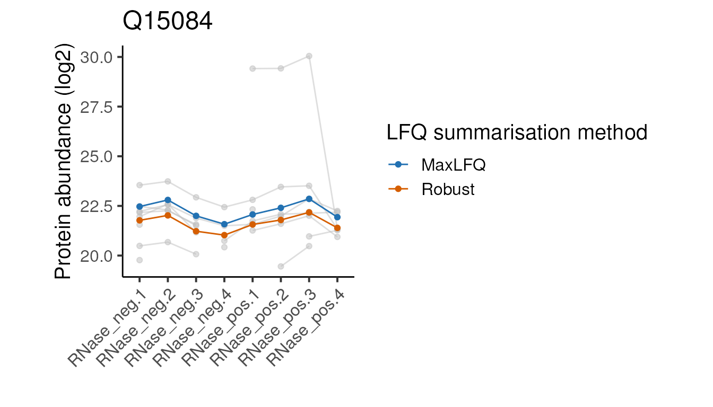

LFQ_parse_qc_protein_inference.Rmd
library(camprotR)
library(Biostrings)
library(MSnbase)
library(naniar)
library(gplots)
library(biobroom)
library(ggplot2)
library(tidyr)
library(dplyr)
library(tibble)
library(httr)We start by reading in a file containing peptide-level output from Proteome Discoverer (PD). This experiment was designed to identify RNA-binding proteins (RBPs) in the U-2 OS cell line using the OOPS method (Queiroz et al. 2019) with a comparison of RNase +/- used to separate RBPs from background non-specific proteins. 4 replicate experiments were performed, where the RNase +/- experiments were performed from the same OOPS interface resulting in 8 samples in total. For each LFQ run, approximately the same quantity of protein was injected, based on quantification of peptide concentration post trypsin digestion. This data is not published but aim of the experiment is equivalent to figure 2e in the original OOPS paper (Queiroz et al. 2019).
pep_data <- camprotR::lfq_oops_rnase_pepThe samples analysed are as follows:
sample_data <- data.frame(
File = paste0("F", 17:24),
Sample = paste0(rep(c("RNase_neg", "RNase_pos"), each = 4), ".", 1:4),
Condition = rep(c("RNase_neg", "RNase_pos"), each = 4),
Replicate = rep(1:4, 2)
)
knitr::kable(sample_data)| File | Sample | Condition | Replicate |
|---|---|---|---|
| F17 | RNase_neg.1 | RNase_neg | 1 |
| F18 | RNase_neg.2 | RNase_neg | 2 |
| F19 | RNase_neg.3 | RNase_neg | 3 |
| F20 | RNase_neg.4 | RNase_neg | 4 |
| F21 | RNase_pos.1 | RNase_pos | 1 |
| F22 | RNase_pos.2 | RNase_pos | 2 |
| F23 | RNase_pos.3 | RNase_pos | 3 |
| F24 | RNase_pos.4 | RNase_pos | 4 |
The first step is to remove contaminant proteins. These were defined using the cRAP database. Below, we parse the cRAP FASTA to extract the IDs for the cRAP proteins, in both ‘cRAP’ format and UniProt accessions for these proteins.
crap_fasta_inf <- system.file(
"extdata", "cRAP_20190401.fasta.gz",
package = "camprotR"
)
# Load the cRAP FASTA used for the PD search
crap_fasta <- fasta.index(crap_fasta_inf, seqtype = "AA")
# Define a base R version of stringr::str_extract_all()
str_extract_all <- function(pattern, string) {
gregexpr(pattern, string, perl = TRUE) %>%
regmatches(string, .) %>%
unlist()
}
# Extract the UniProt accessions associated with each cRAP protein
crap_accessions <- crap_fasta %>%
pull(desc) %>%
str_extract_all("(?<=\\|).*?(?=\\|)", .) %>%
unlist()We can then supply these cRAP protein IDs to
parse_features() which will remove features (i.e. peptides
in this case) which may originate from contaminants, as well as features
which don’t have a unique master protein.
See ?parse_features for further details, including the
removal of ‘associated cRAP’ for conservative contaminants removal.
pep_data_flt <- camprotR::parse_features(
pep_data,
TMT = FALSE,
level = 'peptide',
crap_proteins = crap_accessions,
)
#> Parsing features...
#> 496 features found from 100 master proteins => Input
#> 242 cRAP proteins supplied
#> 28 proteins identified as 'cRAP associated'
#> 440 features found from 96 master proteins => cRAP features removed
#> 440 features found from 96 master proteins => associated cRAP features removed
#> 410 features found from 84 master proteins => features with non-unique master proteins removedFrom the above, we can see that we have started with 496 ‘features’ (peptides) from 100 master proteins across all samples. After removal of contaminants and peptides that can’t be assigned to a unique master protein, we have 410 peptides remaining from 84 master proteins.
We now store the filtered peptide data in an MSnSet, the standard
data object for proteomics in R. See the vignette("msnset")
for more details.
# Create expression matrix with peptide abundances (exprs) and human
# readable column names
exprs_data <- pep_data_flt %>%
select(matches("Abundance")) %>%
`colnames<-`(sample_data$Sample) %>%
as.matrix()
# Create data.frame with sample metadata (pData)
pheno_data <- sample_data %>%
select(-File) %>%
column_to_rownames(var = "Sample")
# Create data.frame with peptide metadata (fData)
feat_data <- pep_data_flt %>%
select(-matches("Abundance"))
# Create MSnSet
pep <- MSnbase::MSnSet(exprs = exprs_data,
fData = feat_data,
pData = pheno_data)First of all, we want to inspect the peptide intensity distributions. We expect these to be approximately equal and any very low intensity sample would be a concern that would need to be further explored. Here, we can see that there is some clear variability, but no sample with very low intensity.
pep %>%
log(base = 2) %>%
camprotR::plot_quant(method = 'density')
#> Warning: Removed 1169 rows containing non-finite values
#> (`stat_density()`).Peptide intensities
Next, we consider the missing values. Note that
MSnbase::plotNA assumes the object contains protein-level
data and names the x-axis accordingly. Here, we update the plot
aesthetics and rename the x-axis
p <- MSnbase::plotNA(pep, pNA = 0) +
camprotR::theme_camprot(border = FALSE, base_family = 'sans', base_size = 10) +
labs(x = 'Peptide index')So, from the 410 peptides, just 107 have quantification values in all 8 samples. This is not a suprise for LFQ, since each sample is prepared and run separately.
print(p)Data completeness, all peptides
We can explore the structure of the missing values further using an ‘upset’ plot.
missing_data <- pep %>%
exprs() %>%
data.frame()
naniar::gg_miss_upset(missing_data,
sets = paste0(colnames(pep), '_NA'),
keep.order = TRUE,
nsets = 10)Missing values upset plot
So in this case, we can see that the most common missing value patterns are:
RNase negative replicate 4 had slightly lower overall petide intensities and appears to be somewhat of an outlier. In this case, we will retain the sample but in other cases, this may warrant further exploration and potentially removal of a sample.
Finally, we recode the abundances to binary (present/absent) and plot the missing data structure as a heatmap (missing = black). Beyond the aforementioned observations regarding RNase negative replicate 4, there’s no clear structure in the missing values. This is what we would expect for LFQ, where data is largely missing at random (MAR). There are methods to impute values MAR, but, providing what we are after is protein-level abundance, it is usually more appropriate to perform the protein inference using a method that can accommodate missing values.
missing_data[!is.na(missing_data)] <- 1
missing_data[is.na(missing_data)] <- 0
gplots::heatmap.2(
as.matrix(missing_data),
col = c("black", "lightgray"),
scale = "none", # Don't re-scale the input
# Default is euclidean, which is less appropriate distance for binary vectors
distfun = function(x) dist(x, method = 'binary'),
trace = "none", # Don't include a trace. Improves appearance
key = FALSE, # Don't include a key as values are binary
Colv = FALSE, # Don't re-order the columns
labRow = FALSE, # Don't label the rows
cexCol = 0.7 # Reduce the column name size
)
#> Warning in gplots::heatmap.2(as.matrix(missing_data), col = c("black",
#> "lightgray"), : Discrepancy: Colv is FALSE, while dendrogram is `both'. Omitting
#> column dendogram.Presence/Absence heatmap
We have injected the same quantity of peptides for each sample, so
it’s reasonable to normalise the samples against one another. Here we
will apply ‘center-median’ normalisation, which in
MSnbase::normalise is called ‘diff.median’. Since the
peptide intensities are log-Gaussian distributed, we
log2-transform them before performing the normalisation.
pep_norm <- pep %>%
log(base = 2) %>%
MSnbase::normalise('diff.median')
pep_norm %>%
camprotR::plot_quant(method = 'density')
#> Warning: Removed 1169 rows containing non-finite values
#> (`stat_density()`).Protein intensities post-normalisation
Before we can summarise to protein-level abundances, we need to
exclude peptides with too many missing values. Here, peptides with more
than 5/8 missing values are discarded, using
MSnbase::filterNA(). We also need to remove proteins
without at least two peptides. We will use
camprotR::restrict_features_per_protein() which will
replace quantification values with NA if the sample does
not have two quantified peptides for a given protein. Note that this
means we have to repeat the filtering process since we are adding
missing values.
pep_restricted <- pep_norm %>%
MSnbase::filterNA(pNA = 4/8) %>% # Maximum 4/8 missing values
camprotR::restrict_features_per_protein(min_features = 2, plot = FALSE) %>% # At least two peptides per protein
# Repeat the filtering since restrict_features_per_protein will replace some values with NA
MSnbase::filterNA(pNA = 4/8) %>%
camprotR::restrict_features_per_protein(min_features = 2, plot = FALSE) We can then re-inspect the missing values. Note that we have reduced the overall number of peptides to 271.
p <- MSnbase::plotNA(pep_restricted, pNA = 0) +
camprotR::theme_camprot(border = FALSE, base_family = 'sans', base_size = 15) +
labs(x = 'Peptide index')
print(p)Data completeness, retained peptides
We can now summarise to protein-level abundance. Below, we use
‘robust’ summarisation (Sticker et al.
2020) with MSnbase::combineFeatures(). This returns
a warning about missing values that we can ignore here since the robust
method is inherently designed to handle missing values. See
MsCoreUtils::robustSummary() and this publication
for further details about the robust method.
prot_robust <- pep_restricted %>%
MSnbase::combineFeatures(
# group the peptides by their master protein id
groupBy = fData(pep_restricted)$Master.Protein.Accessions,
method = 'robust',
maxit = 1000 # Ensures convergence for MASS::rlm
)
#> Your data contains missing values. Please read the relevant section in
#> the combineFeatures manual page for details on the effects of missing
#> values on data aggregation.We can then re-inspect the missing values at the protein level. So, we have quantification for 46 proteins, of which 26 are fully quantified across all 8 samples. The most common missing values pattern remains missing in just RNase negative replicate 4.
p <- MSnbase::plotNA(prot_robust, pNA = 0) +
camprotR::theme_camprot(border = FALSE, base_family = 'sans', base_size = 15)
print(p)
naniar::gg_miss_upset(data.frame(exprs(prot_robust)),
sets = paste0(colnames(prot_robust), '_NA'),
keep.order = TRUE,
nsets = 10)We have now obtained protein-level abundances from our LFQ data. This is our recommended procedure for summarising from peptide to protein level abundances.
Although we recommend using the ‘robust’ summarisation, there are
other algorithms that are commonly applied. For example MaxLFQ (Cox et al. 2014), which is implemented within
MaxQuant, but also available via the iq::maxLFQ() function
in the iq package in R (now available on CRAN).
# You may wish to retain more feature columns that this!
feature_coloumns_to_retain <- c("Master.Protein.Accessions")
# To ensure we are only comparing the protein inference method and not normalisation etc,
# we will use the same set of peptides for both inference methods
pep_data_for_summarisation <- pep_restricted %>%
exprs() %>%
data.frame() %>%
merge(fData(pep_restricted)[, feature_coloumns_to_retain, drop = FALSE],
by = 'row.names') %>%
select(-Row.names)Below, we use iq::maxLFQ() manually, though it should be
possible to use this function within
MSnbase::combineFeatures() too in theory since it
accommodates user-defined functions.
# Define a function to perform MaxLFQ on a single protein and return a data.frame
# as required.
get_maxlfq_estimate <- function(obj) {
prot <- iq::maxLFQ(as.matrix(obj))$estimate
data.frame(t(prot)) %>%
setNames(colnames(obj))
}
# Group by the features we want to retain and use MaxLFQ on each protein
maxlfq_estimates <- pep_data_for_summarisation %>%
group_by(across(all_of(feature_coloumns_to_retain))) %>%
dplyr::group_modify(~ get_maxlfq_estimate(.)) %>%
ungroup()
# Create the protein-level MSnSet
maxlfq.e <- as.matrix(select(maxlfq_estimates, -Master.Protein.Accessions))
maxlfq.f <- data.frame(select(maxlfq_estimates, Master.Protein.Accessions))
maxlfq.p <- pData(pep_restricted)
prot_maxlfq <- MSnSet(exprs = maxlfq.e,
fData = maxlfq.f,
pData = maxlfq.p)
# Update the rownames to be the protein IDs
rownames(prot_maxlfq) <- maxlfq_estimates$Master.Protein.AccessionsWe can now compare the protein-level abundance estimates.
# Define a function to extract the protein abundances in long form and
# add a column annotating the method
get_long_form_prot_exp <- function(obj, method_name) {
tidy(obj) %>%
mutate(method = method_name)
}
# Single object with protein inference from both methods
compare_protein_abundances <- rbind(
get_long_form_prot_exp(prot_maxlfq, 'MaxLFQ'),
get_long_form_prot_exp(prot_robust, 'Robust')
)
# Plot direct comparison
compare_protein_abundances %>%
pivot_wider(names_from = method, values_from = value) %>% # pivot to wider form for plotting
ggplot(aes(x = Robust, y = MaxLFQ)) +
geom_point(alpha = 0.25, size = 0.5) +
theme_camprot(border = FALSE, base_family = 'sans', base_size = 15) +
geom_abline(slope = 1, colour = get_cat_palette(2)[2], linetype = 2, size = 1)Comparison of protein inference methods
There is a very good overall correlation. Let’s inspect a few proteins with the largest differences between the two approaches to see what’s going on for the edge cases.
# Identify proteins with largest difference between the protein summarisation methods
proteins_of_interest <- compare_protein_abundances %>%
pivot_wider(names_from = method, values_from = value) %>%
mutate(diff = MaxLFQ-Robust) %>%
arrange(desc(abs(diff))) %>%
pull(protein) %>%
unique() %>%
head(5)Below we define a function to plot the peptide and protein abundances for the two methods for a single protein. We can ignore the details since it’s the plots themselves we are interested in.
plot_pep_and_protein <- function(protein_of_interest) {
to_plot_compare <- compare_protein_abundances %>%
filter(protein == protein_of_interest)
pep_restricted[fData(pep_restricted)$Master.Protein.Accession == protein_of_interest] %>%
exprs() %>%
data.frame() %>%
rownames_to_column('id') %>%
pivot_longer(cols = -id) %>%
ggplot(aes(x = name, y = value)) +
geom_line(aes(group = id), colour = 'grey', alpha = 0.5) +
geom_point(colour = 'grey', alpha = 0.5) +
geom_line(data = to_plot_compare,
aes(x = sample.id, y = value, colour = method, group = method)) +
geom_point(data = to_plot_compare,
aes(x = sample.id, y = value, colour = method)) +
scale_colour_manual(values = get_cat_palette(2), name = 'LFQ summarisation method') +
theme_camprot(base_size = 15, border = FALSE, base_family = 'sans') +
theme(axis.text.x = element_text(angle = 45, vjust = 1, hjust = 1)) +
labs(
title = protein_of_interest,
x = '',
y = 'Protein abundance (log2)'
)
}Below we apply the above function to each of our proteins of interest.
#>
#> [[2]]
#>
#> [[3]]#>
#> [[4]]#>
#> [[5]]Looking at these examples, we can see that MaxLFQ is often estimating slightly higher abundances but with a very similar profile across the samples is very similar, so the summarisation approach is unlikely to affect the downstream analysis. It’s not clear which of the two approaches is more correct in the examples above, but the publication proposing the robust protein inference (see here) does indicate it gives more accurate fold-change estimates overall.
We have now processed our peptide-level LFQ abundances and obtained protein-level abundances, from which we can perform our downstream analyses.
Finally, we consider an alternative normalisation approach where we have a strong prior expectation about the abundance of a subset of proteins. Our data is from an RNase +/- OOPS experiment. Since OOPS is known to enrich glycoproteins at the interface, we can use these proteins as an internal set of ‘housekeeping’ proteins which we expect to have no difference in abundance between RNase +/-.
First, we need to calculate the RNase +/- ratios, since this is the value we want to normalise. In other applications, you may wish to normalise the abundance estimates for each sample, rather than the ratio between samples.
ratios <- exprs(prot_robust[,pData(prot_robust)$Condition == 'RNase_neg']) -
exprs(prot_robust[,pData(prot_robust)$Condition == 'RNase_pos'])
prot_ratios <- MSnSet(exprs = ratios,
fData = fData(prot_robust),
pData = (pData(prot_robust) %>% filter(Condition == 'RNase_neg')))Next, we need annotations regarding which proteins are glycoproteins and GO-annotated RBPs. [Once a notebook has been added to cover GO annotations, reference to that here to avoid repeating explanations about why we want to expand the set of GO anntotations]
Get all GO terms for our proteins by querying UniProt programmatically.
# remotes::install_github("csdaw/uniprotREST")
res <- uniprotREST::uniprot_map(
ids = rownames(prot_robust),
fields = c("accession", "feature_count", "go_id"),
format = "tsv",
verbosity = 0
)
res <- res %>% select(Entry, Features, Gene.Ontology.IDs)Get RBPs
# GO term for RNA-binding
go_rbp <- "GO:0003723"
# All offspring (since some proteins will only be annotated with an offspring term)
go_rbp_offspring <- AnnotationDbi::get("GO:0003723", GO.db::GOMFOFFSPRING)
#>
# Identify all GO-RBPs
rbps<- res %>%
separate_rows(Gene.Ontology.IDs, sep='; ') %>%
filter(Gene.Ontology.IDs %in% c(go_rbp, go_rbp_offspring)) %>%
pull(Entry) %>%
unique()
# Get glycoproteins
glycoproteins <- res %>%
filter(grepl("Glycosylation", Features)) %>%
mutate(Glyco.features = Features) %>%
separate_rows(Glyco.features, sep = "; ") %>%
filter(grepl("Glycosylation", Glyco.features)) %>%
mutate(Glyco.features = gsub("\\(|\\)", "", Glyco.features)) %>%
separate(Glyco.features, into = c(NA, "Glycosylation.count"), sep = " ") %>%
select(Entry, Glycosylation.count)Add feature columns describing the glycoprotein and GO-RBP status of the proteins.
fData(prot_ratios) <- fData(prot_ratios) %>%
mutate(Glycoprotein = rownames(prot_ratios) %in% glycoproteins$Entry) %>%
mutate(GO.RBP = rownames(prot_ratios) %in% rbps) %>%
mutate(Glyco.RBP = interaction(Glycoprotein, GO.RBP)) %>%
mutate(Glyco.RBP = factor(recode(
Glyco.RBP,
'TRUE.TRUE'='GO:RBGP',
'FALSE.TRUE'='GO:RBP',
'TRUE.FALSE'='Glycoprotein',
'FALSE.FALSE'='Other'),
levels = c('GO:RBP', 'GO:RBGP', 'Other', 'Glycoprotein'))
)Below, we define a function to plot the ratios for each functional sub-type of proteins.
plot_ratios <- function(obj) {
to_plot <- merge(
exprs(obj),
fData(obj)[,'Glyco.RBP',drop = FALSE],
by = 'row.names'
) %>%
pivot_longer(cols = -c(Row.names, Glyco.RBP), names_to = 'sample', values_to = 'ratio') %>%
merge(pData(obj), by.x = 'sample', by.y = 'row.names') %>%
filter(is.finite(ratio))
p <- to_plot %>%
ggplot(aes(x = Replicate, y = ratio,
group = interaction(Glyco.RBP, Replicate),
colour = factor(Glyco.RBP))) +
geom_boxplot(position = position_dodge()) +
theme_camprot(border = FALSE, base_family = 'sans', base_size = 15) +
scale_colour_manual(values = c(get_cat_palette(3), 'black'), name = '') +
geom_hline(yintercept = 0, linetype = 2, colour = 'grey') +
labs(
x = "Replicate",
y = "RNase -/+ ratio"
)
print(p)
invisible(to_plot)
}How do the protein ratios look pre-normalisation…
plot_ratios(prot_ratios)OK, so the glycoproteins are not centered at zero and there are GO-annotated RBPs with negative log RNase -/+ ratios (as much as ~25% in replicate 2)
Below, we perform the center median normalisation to the set of reference proteins (here, the glycoproteins).
glycoprotein_medians <- prot_ratios[fData(prot_ratios)$Glyco.RBP == 'Glycoprotein',] %>%
camprotR::get_medians()
prot_ratios_norm <- camprotR::center_normalise_to_ref(
prot_ratios,
glycoprotein_medians,
center_to_zero = TRUE, # We want to center the glycoproteins around zero
on_log_scale = TRUE # The quantifications are on a log scale (log2 ratios)
)And plot the protein ratios post-normalisation.
plot_ratios(prot_ratios_norm)Now, the median log2 RNase -/+ ratio for glycoproteins is zero for all replicates and we have far fewer GO-annotated RBPs with negative log RNase -/+ ratios.
#> R version 4.2.2 (2022-10-31)
#> Platform: x86_64-pc-linux-gnu (64-bit)
#> Running under: Ubuntu 22.04.1 LTS
#>
#> Matrix products: default
#> BLAS: /usr/lib/x86_64-linux-gnu/openblas-pthread/libblas.so.3
#> LAPACK: /usr/lib/x86_64-linux-gnu/openblas-pthread/libopenblasp-r0.3.20.so
#>
#> locale:
#> [1] LC_CTYPE=en_US.UTF-8 LC_NUMERIC=C
#> [3] LC_TIME=en_US.UTF-8 LC_COLLATE=en_US.UTF-8
#> [5] LC_MONETARY=en_US.UTF-8 LC_MESSAGES=en_US.UTF-8
#> [7] LC_PAPER=en_US.UTF-8 LC_NAME=C
#> [9] LC_ADDRESS=C LC_TELEPHONE=C
#> [11] LC_MEASUREMENT=en_US.UTF-8 LC_IDENTIFICATION=C
#>
#> attached base packages:
#> [1] stats4 stats graphics grDevices utils datasets methods
#> [8] base
#>
#> other attached packages:
#> [1] httr_1.4.4 tibble_3.1.8 dplyr_1.0.10
#> [4] tidyr_1.2.1 ggplot2_3.4.0 biobroom_1.30.0
#> [7] broom_1.0.2 gplots_3.1.3 naniar_0.6.1
#> [10] MSnbase_2.24.2 ProtGenerics_1.30.0 mzR_2.32.0
#> [13] Rcpp_1.0.9 Biobase_2.58.0 Biostrings_2.66.0
#> [16] GenomeInfoDb_1.34.6 XVector_0.38.0 IRanges_2.32.0
#> [19] S4Vectors_0.36.1 BiocGenerics_0.44.0 camprotR_0.0.0.9000
#>
#> loaded via a namespace (and not attached):
#> [1] colorspace_2.0-3 ellipsis_0.3.2 visdat_0.5.3
#> [4] rprojroot_2.0.3 fs_1.5.2 clue_0.3-63
#> [7] farver_2.1.1 affyio_1.68.0 bit64_4.0.5
#> [10] AnnotationDbi_1.60.0 fansi_1.0.3 codetools_0.2-18
#> [13] ncdf4_1.21 doParallel_1.0.17 cachem_1.0.6
#> [16] impute_1.72.2 robustbase_0.95-0 knitr_1.41
#> [19] jsonlite_1.8.4 GO.db_3.16.0 cluster_2.1.4
#> [22] vsn_3.66.0 png_0.1-8 BiocManager_1.30.19
#> [25] compiler_4.2.2 backports_1.4.1 assertthat_0.2.1
#> [28] fastmap_1.1.0 limma_3.54.0 cli_3.5.0
#> [31] htmltools_0.5.4 tools_4.2.2 gtable_0.3.1
#> [34] glue_1.6.2 GenomeInfoDbData_1.2.9 affy_1.76.0
#> [37] rappdirs_0.3.3 MALDIquant_1.22 jquerylib_0.1.4
#> [40] pkgdown_2.0.7 vctrs_0.5.1 preprocessCore_1.60.1
#> [43] iterators_1.0.14 xfun_0.36 stringr_1.5.0
#> [46] lifecycle_1.0.3 iq_1.9.7 gtools_3.9.4
#> [49] XML_3.99-0.13 DEoptimR_1.0-11 zlibbioc_1.44.0
#> [52] MASS_7.3-58.1 scales_1.2.1 ragg_1.2.4
#> [55] pcaMethods_1.90.0 parallel_4.2.2 httr2_0.2.2
#> [58] yaml_2.3.6 curl_4.3.3 memoise_2.0.1
#> [61] gridExtra_2.3 UpSetR_1.4.0 sass_0.4.4
#> [64] RSQLite_2.2.20 stringi_1.7.8 highr_0.10
#> [67] desc_1.4.2 foreach_1.5.2 checkmate_2.1.0
#> [70] caTools_1.18.2 BiocParallel_1.32.5 rlang_1.0.6
#> [73] pkgconfig_2.0.3 systemfonts_1.0.4 bitops_1.0-7
#> [76] mzID_1.36.0 evaluate_0.19 lattice_0.20-45
#> [79] purrr_1.0.0 labeling_0.4.2 bit_4.0.5
#> [82] tidyselect_1.2.0 plyr_1.8.8 magrittr_2.0.3
#> [85] R6_2.5.1 generics_0.1.3 DBI_1.1.3
#> [88] pillar_1.8.1 withr_2.5.0 MsCoreUtils_1.10.0
#> [91] KEGGREST_1.38.0 RCurl_1.98-1.9 crayon_1.5.2
#> [94] KernSmooth_2.23-20 utf8_1.2.2 rmarkdown_2.19
#> [97] grid_4.2.2 blob_1.2.3 uniprotREST_0.0.0.9000
#> [100] digest_0.6.31 textshaping_0.3.6 munsell_0.5.0
#> [103] bslib_0.4.2